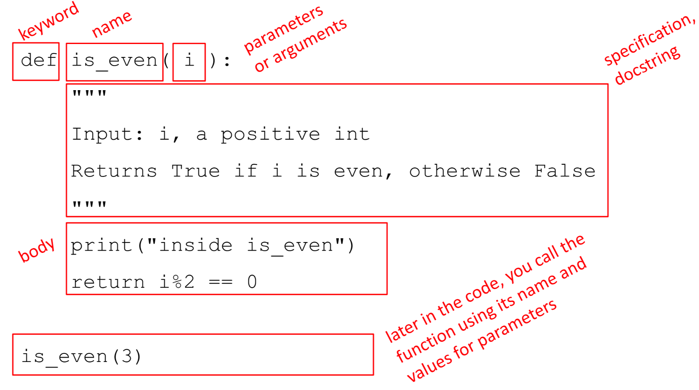
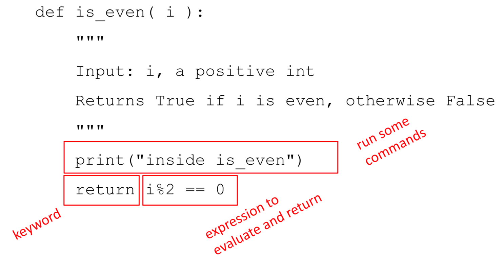
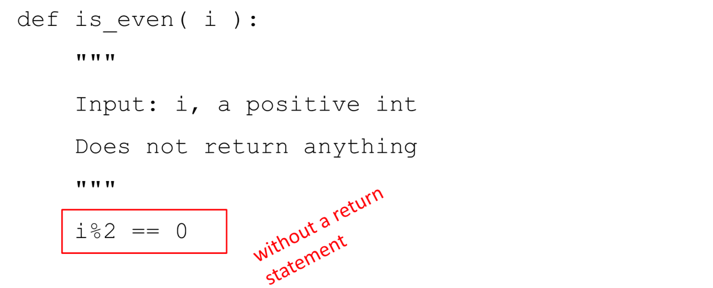
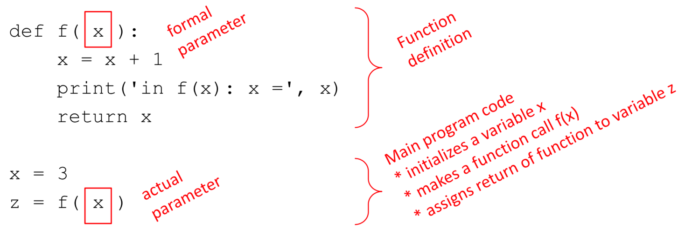
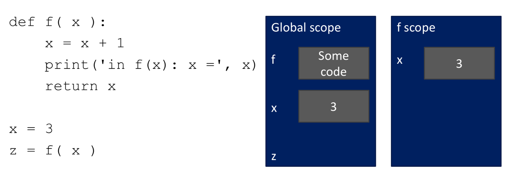
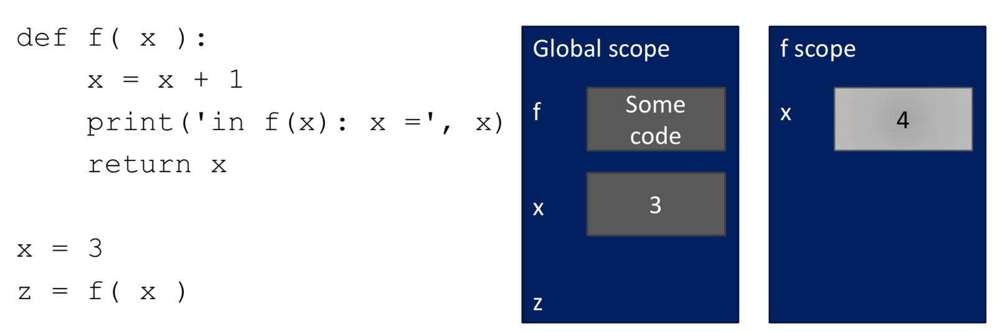
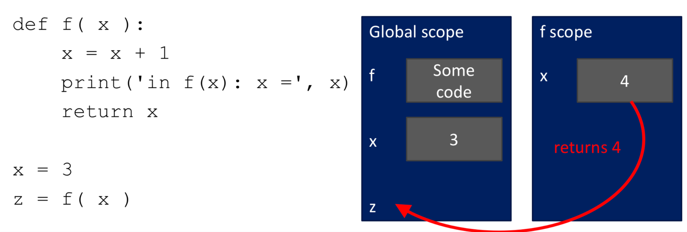
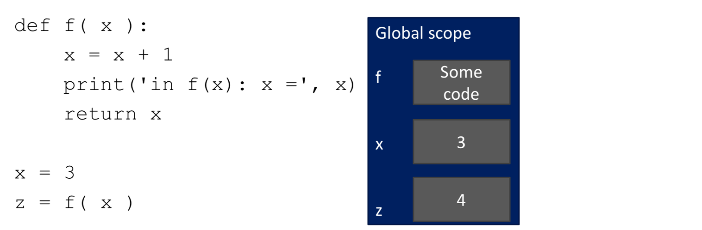
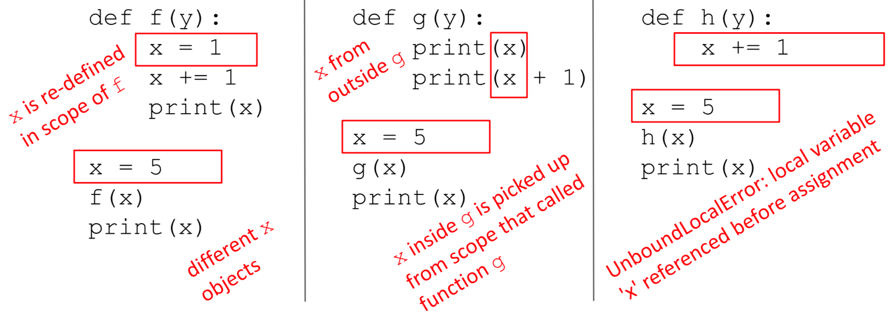
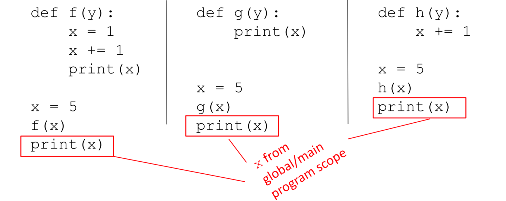

Functions#
Introduction to computer programming
Management and Artificial Intelligence
Reusing Code#
So far…
we have covered some basic language mechanisms
we know how to write:
different
.pyfiles for different computationsdifferent code cells for different computations
…where each file/cell contains some piece of code
…and each code is a sequence of operations
- easy for small-scale problems
- messy for large-scale problems
- hard to keep track of details and maintain
- difficult to reuse within more complex programs
Functions#
More code does not necessarily mean good practice → use functions.
Why?
functions are reusable chunks of code
functions run if and only if are called or invoked
Characteristics of a function:
functions have a name
functions have (0 or more) parameters
functions have a docstring*
functions have a body
functions return something.
*Optional, but recommended
Anatomy of a function#

Function body#

When a function is invoked, Python:
creates a frame for the function call
assigns arguments to parameters
executes function body
erases the frame
Example:
def f(i):
j = i * 2
return j
n = f(1)
n = f(2)
n = f(3)
Let’s see it in Python Tutor: pythontutor.com
The importance of return#

What happens when running e.g. n=is_even(2)?
Python returns
Noneif noreturnis givenNonerepresents the absence of a value
print vs. return#
print
- can be placed anywhere
- as many
printstatements as you want - code after
printis executed - has a value outputted to the console
return
- has a meaning only inside a function
- only one
returnstatement is executed - code after
returnis not executed - has a value returned to the function caller
One return, multiple values#
The return statement can return multiple values (if needed):
list of values separated by commas
returns a tuple*
Example:
def hms(nsec):
"""Takes nsec (n. of seconds) and splits in hours, minutes, seconds"""
hh = nsec // 3600
nsec = nsec % 3600
mm = nsec // 60
ss = nsec % 60
return hh, mm, ss
print(hms(4000))
print(hms(100000))
(1, 6, 40)
(27, 46, 40)
*We will see tuples later in the course, for now we just print multiple outputs.
Variable Scope#

the formal parameter gets bound to the actual parameter when the function is called
when entering a function, a new scope (or frame, or environment) is created
the scope is the mapping of names to objects
Running Example (1/4)#

What’s going on here?
in the main (i.e., global) scope, we define function
fin the main scope, we define variable
xfunction
fis called and variablexis fed tof
Running Example (2/4)#

What’s going on here?
variable
xis changed insidefbecause ofx = x+1
x in the global scope has not been changed because f has its own scope!Running Example (3/4)#

What’s going on here?
variable
xinsidefis ready to bereturnedin the global scope, there is variable
zready to host thereturned value
Running Example (4/4)#

What’s going on here?
the frame of function
fis destroyed because its execution is finishedin the global scope, we have the original value for
xin the global scope, we have the output of function
fin the new variablez
Important Caveats on Variable Scopes (part 1)#

inside a function, you can access variables defined outside the function itself
inside a function, you cannot modify variables defined outside the function itself
to modify variables defined outside, you must use the
globalkeyword… which is frowned upon
Important Caveats on Variable Scopes (part 2)#

due to the fact that (by default) you cannot modify variables inside a function,
xremains untouched
The global Keyword#
when we create a variable inside a function, it is local by default
when we create a variable outside a function, it is global by default
using the
globalkeyword outside a function has no effectwe use the
globalkeyword to write/modify a variable inside a function
For instance, let us consider this code:
def add():
global c
c = 3
print("Inside add(): c = ", c)
c = 1
add()
print("In main(): c = ", c)
Inside add(): c = 3
In main(): c = 3
Function add is modifying the global variable c.
What happens if we omit the global keyword?
def add():
c = 3 # this a local variable!
print("Inside add(): c = ", c)
c = 1 # this is a global variable
add()
print("In main(): c = ", c)
Inside add(): c = 3
In main(): c = 1
Function add is not modifying the global variable c but its own local variable.
Nested Functions#
You can nest functions arbitrarily.
Scopes of nested functions behave like Matryoshka dolls.
Let’s see how thanks to pythontutor.com on this example:
def g(x):
def h():
x = 'abc'
x = x + 1
print('g: x =', x)
h()
return x
x = 3
z = g(x)
g: x = 4
Positional vs. Keyword Arguments#
We have seen positional bounding of formal parameters to actual parameters:
the first formal parameter is bound to the first actual parameter
the second formal to the second actual
…and so on, until all parameters are bounded
Python also supports keyword bounding
formals are bound to actuals using the name of the formal parameter
Example:
def add(a, b, c):
return a + b + c
print(add(1, 2, 3)) # positional bounding a->1, b->2, c->3
print(add(c=3, a=1, b=2)) # keyword bounding (order does not matter)
6
6
Optional and Default Parameters#
All parameters need to be provided to a function:
via positional or keyword arguments
via default parameters
For instance, when we consider this function:
def area_cylinder(radius=1, height=1):
pi = 3.14
bottom_area = pi * radius ** 2
side_area = pi * height * radius * 2
return side_area + bottom_area * 2
When we call this function with no parameters:
def area_cylinder(radius=1, height=1):
pi = 3.14
bottom_area = pi * radius ** 2
side_area = pi * height * radius * 2
return side_area + bottom_area * 2
print("No parameters: ", area_cylinder())
No parameters: 12.56
The function will use the default values for the two parameters. Indeed:
print("Check: ", area_cylinder(1, 1))
Check: 12.56
Or, we can call this function with one parameter:
def area_cylinder(radius=1, height=1):
pi = 3.14
bottom_area = pi * radius ** 2
side_area = pi * height * radius * 2
return side_area + bottom_area * 2
print("One parameter: ", area_cylinder(2))
One parameter: 37.68
We are passing only the first (positional) parameter. For the second one we are using the default value. Indeed:
print("Check: ", area_cylinder(2, 1))
Check: 37.68
As already seen, the natural choice would be to call it with the two parameters:
def area_cylinder(radius=1, height=1):
pi = 3.14
bottom_area = pi * radius ** 2
side_area = pi * height * radius * 2
return side_area + bottom_area * 2
print("Two parameters: ", area_cylinder(2, 3))
Two parameters: 62.8
If we want to set only one specific parameter (e.g., the second one), while keeping the default values for the other ones (e.g., the first parameter), then we can:
def area_cylinder(radius=1, height=1):
pi = 3.14
bottom_area = pi * radius ** 2
side_area = pi * height * radius * 2
return side_area + bottom_area * 2
print("Specific parameters: ", area_cylinder(height=2))
Specific parameters: 18.84
Which would be equivalent to:
print("Check: ", area_cylinder(1, 2))
Check: 18.84
Built-in Functions#
Python implements many functions by default, which are called built-in functions.
Examples of built-in functions:
numerical functions, such as
round(x)andpow(x,y)*casting, such as
int(x),float(x)andstr(x)input and output, namely
input()andprint()help function, namely
help()**
Related functions are grouped into files, called modules.
* Which is another way of doing exponentiation: pow(x,y) is the same as x**y.
** The help() function takes as input the name of a function and returns its docstring.
Modules#
Modular programming is the way of breaking a large, unwieldy programming task into separate, smaller (and more manageable) subtasks.
A module is a piece of software with a specific functionality.
For example, a game (e.g., chess, ping-pong, …):
a module responsible for the game logic (rules)
a module responsible for graphics
In Python, each module is a Python file with a .py extension, yet other extensions are also possible (e.g., pre-compiled C++).
Modules contain some Python code (e.g., functions, class definitions, …).
For instance, a random module might look like this:
random.pydef sample(args):
"""Chooses k unique random elements from a population..."""
# some code
def randint(args):
"""Return random integer in range [a, b], including both end points."""
# some code
def random(args):
"""Get the next random number in the range [0.0, 1.0)."""
# some code
Using Modules in Python#
Modules are imported (in your script, in your function or in other modules) using the import command.
You can use two different strategies for using a specific function from that module.
using the
<module>.<function>notation
import random # or any other module
print(random.randint(1, 100)) # or any other function
86
using the
fromcommand
from random import randint # or any other function
print(randint(1, 100))
83
Common Modules in Python#
Python comes with many modules, including:
io: read and write from filesmath: mathematical functionsrandom: pseudo-random number generatorstring: useful string functionssys: information about your operating system
You can find the full list here:
An example: the math module:
Number-theoretic and representation functions
Power and logarithmic functions
Trigonometric functions
Angular conversion
Hyperbolic functions
Special functions and constants
>>> import math
>>> print(math.factorial(x)) # return x!
>>> print(math.log2(x)) # return the base-2 logarithm of x
>>> print(math.cos(math.pi)) # return the cosine of pi
>>> print(math.gcd(x,y)) # return the greatest common divisor
You can find the full list here:
Interactive Documentation#
You can browse the contents of a module interactively via the dir() function.
import math
print(dir(math))
['__doc__', '__file__', '__loader__', '__name__', '__package__', '__spec__', 'acos', 'acosh', 'asin', 'asinh', 'atan', 'atan2', 'atanh', 'cbrt', 'ceil', 'comb', 'copysign', 'cos', 'cosh', 'degrees', 'dist', 'e', 'erf', 'erfc', 'exp', 'exp2', 'expm1', 'fabs', 'factorial', 'floor', 'fmod', 'frexp', 'fsum', 'gamma', 'gcd', 'hypot', 'inf', 'isclose', 'isfinite', 'isinf', 'isnan', 'isqrt', 'lcm', 'ldexp', 'lgamma', 'log', 'log10', 'log1p', 'log2', 'modf', 'nan', 'nextafter', 'perm', 'pi', 'pow', 'prod', 'radians', 'remainder', 'sin', 'sinh', 'sqrt', 'sumprod', 'tan', 'tanh', 'tau', 'trunc', 'ulp']
__ are some metadata files. You can safely ignore them. For example, __file__ contains the path pointing to the module source file.Given a list of functions, you can browse their documentation via the help() function.
help() function takes as input the name of a function and returns its docstring.>>> import math
>>> help(math.log)
Help on built-in function log in module math:
log(...)
log(x, [base=math.e])
If the base not specified, returns the natural logarithm (base e) of x.
(END)
Exercise Session on functions#
Find the exercises for the exercise session: here
Exercise Session on math and datetime modules#
Find the exercises for the exercise session: here